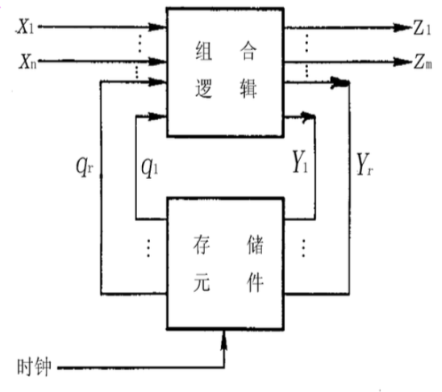
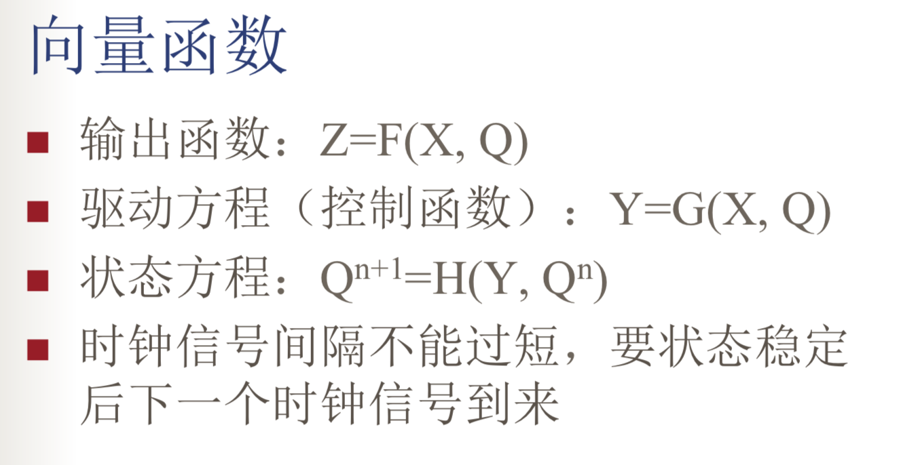
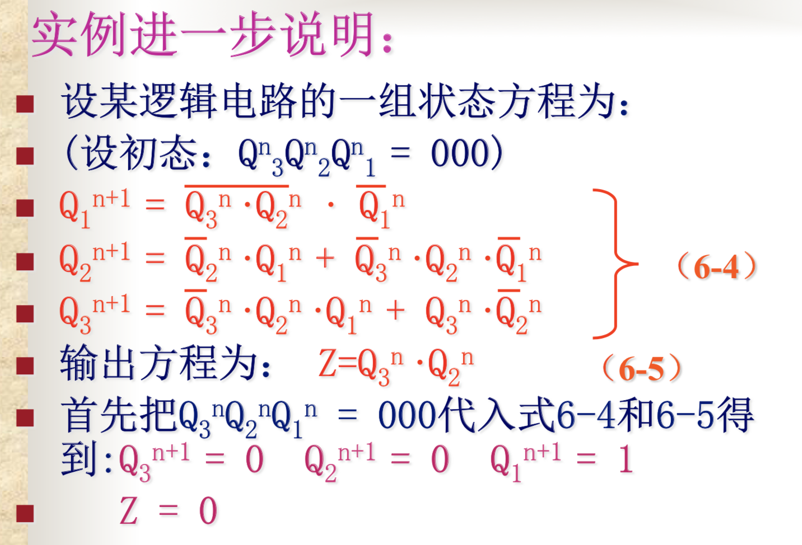
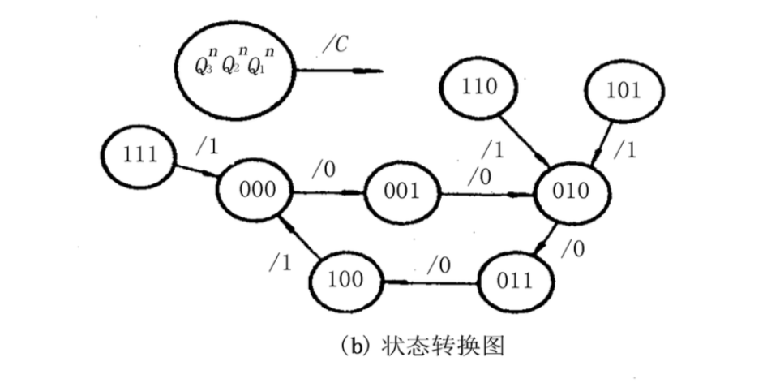
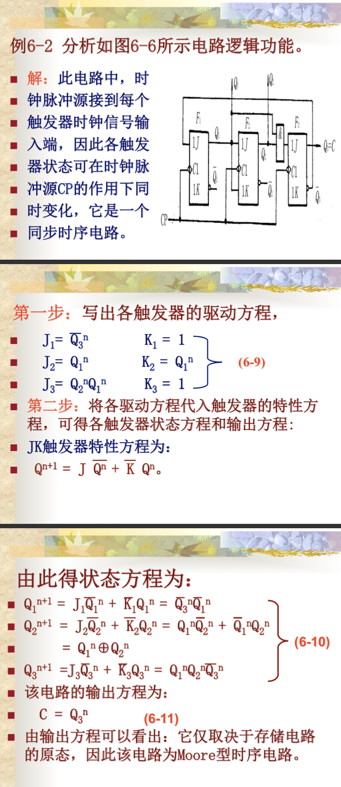
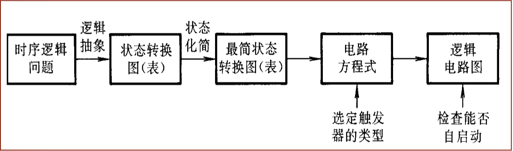

数字电路第六章：同步时序逻辑电路
讲同步时序逻辑电路的工作原理、分析方法和设计方法。
逻辑电路分为：组合逻辑电路和时序逻辑电路。
组合逻辑电路是指典礼在任何时刻所产生的输出仅取决于该时刻电路的输入。
时序逻辑电路按其工作方式不同分为：同步时序逻辑电路、异步时序逻辑电路。
本章介绍同步时序逻辑电路的分析与设计。
同步时序逻辑电路的模型和描述方法
同步时序逻辑电路的结构模型
同步时序逻辑电路是一种与时序有关的电路，一般说来，是由组合电路和存储电路两部分组成，并形成反馈电路。

组合逻辑电路的输出
- 向外输出 Z
- 内部输出 Q
组合逻辑电路的输入
- 外部输入：整个时序电路的输入 X
- 内部输入：存储电路的内部输出 Y
函数的意义
Zi称为输出函数
Yj称为驱动方程
Mealy型电路：Z的输出既和存储电路的输出有关有和当前状态的输入x有关。
Moore型电路：Z的输出只和存储电路的输出有关。
采用时钟控制的触发器构成存储电路
存储时序电路中的二进制信息被定义为电路的状态，触发器的状态就称为时序电路的状态。
向量函数

时钟信号不能间隔过短，要状态状态稳定后再一个信号再来。
同步时序逻辑电路的描述方法
为了形象的表示时序逻辑电路的全过程性，把电路在一系列的时钟信号作用下状态转换的全过程找出来，则电路的逻辑功能就一目了然了。
描述时序电路状态的转换全部过程的方法：
- 状态方程
- 状态转换表（状态转换真值表）
- 状态转换图（简称状态图）
- 时序图（波形图）
状态方程
输出方程：表示输出与输入和现态的关系
驱动方程：表示现态向次态转换所需的条件
状态方程：表示在给定的输入下将使现态转向状态
状态转换表
由现态Q、次态Qn+1和输出Z组成。
例：

状态转换图
在状态转换图中以圆圈表示电路的各个状态，以箭头表示状态转换的方向。 同时，还在箭头旁注明了状态转换前的输入变量取 值和输出值。通常将输入变量取值写在斜线以上，将输出值写在斜线以下。
时序图
将状态转换表的内容画成时间波形图。在时钟脉冲序列作用下，电路状态、输出状态随时间变化的波形图叫做时序图。而且便于用实验观察的方法检查时序电路的逻辑功能。
同步时序逻辑电路的分析方法
根据给定的逻辑电路图，找出他的状态方程、输出方程、状态图和时序图。用这些方法来描述电路的工作全过程及输入输出关系。
时序逻辑电路的分析步骤
找出给定时序电路的逻辑功能即找出在输入信号和时钟信号作用下，电路的次态和输出。一般步骤如下：
- 根据给定的逻辑电路图，写出每个触发器的驱动方程（控制方程）。
- 把得到的驱动方程带入相应的触发器的特性方程，得出每个触发器的状态方程，从而写出这些状态方程的方程组。并写出输出方程。
- 建立状态转换真值表
- 做出状态图和时序波形图。
- 总结功能。
同步时序电路分析的例子
- 找每个触发器的输入端，写方程，=1的框框是环和。
- 把写好的方程带入触发器的特征方程例，写出次态的状态方程，在找输出端写出输出方程。
- 列表，横纵分别有触发器现态和输入值，结果是触发器次态和输出值。
- 画圈圈，把触发器的变化过程用圈圈画出来，箭头写上输入值和输出值。
- 总结。
注意，Moore型的因为次态和输入无关，所以只列输出的表的顺序即可，Mealy型的因为和输入有关所以要建和输入有关的表，注意没有排列到的状态要单独加上，类似于：

整个例如Moore型的例题：

同步时序逻辑电路的设计
设计同步时序逻辑电路的过程
- 根据实际要求进行逻辑抽象，得出电路的原始状态转换图和转换表。
- 状态化简，求最简状态化简表。
- 状态编码。第一步. 确定触发器的数目n 第二步. 给每个电路状态分配一组二进制代码，称为状态编码。
- 选定触发器类型，求出电路的状态方程。根据状态转换图(或状态转换表)和选定的状态编码、触发器的类型，就可写出电路的状态方程、驱动方程和输出方程。
- 根据方程式画出逻辑电路图。
- 检查自启动，解决办法：一、通过预置数。二、修改逻辑设计。
整体步骤如图所示：

建立原始状态转换图和转换表
原始状态状态化简
消除